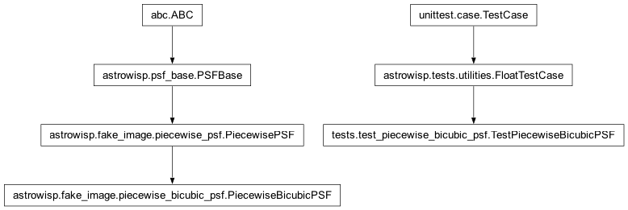
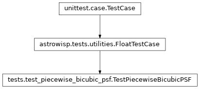

tests.test_piecewise_bicubic_psf module
Class Inheritance Diagram

Define unittest test case for the PiecewiseBicubicPSF class.
- class tests.test_piecewise_bicubic_psf.TestPiecewiseBicubicPSF(methodName='runTest')[source]
Bases:
FloatTestCaseMake sure the PiecewiseBicubicPSF class functions as expected.